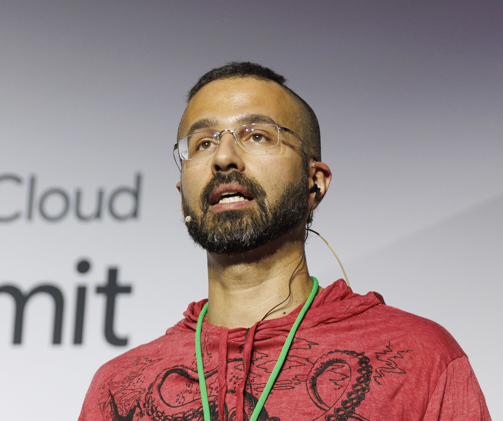

Research Software Engineer | Google Cloud & HPC Scaling | PhD Structural Biology
Senior Research Software Engineer at Zymvol Biomodeling.
Specialized in computational structural biology, holding a Licentiate in Biochemistry (2008) and a Ph.D. in Biophysics (2014). My academic research focused on the structural dynamics of proteins using NMR spectroscopy, bridging wet-lab execution with advanced computational modeling. From 2015 to 2024, I expanded my expertise into software engineering in Python, delivering critical open-source suites including the NIH-funded IDPConformerGenerator and the BioExcel-funded HADDOCK3. I have consistently served as a scientific advisor across numerous collaborations.
In 2024, I transitioned to the private sector to supervise, develop and optimize scalable scientific pipelines, applying my expertise to architect robust software solutions that run seamlessly across HPC clusters and cloud infrastructure.
Throughout my career, I have secured participation in over a dozen funded projects and grants, authored 34 scientific publications and one book chapter, presented 26 posters at international conferences, and dedicated myself to mentoring over 15 students and junior researchers.
Title awarded by the University of Coimbra, Portugal.
Approved Unanimously with Distinction and Honours.
Grant: FCT Doctoral Research Grant for International Training (4 years)
Thesis title: "Paramagnetic NMR of Proteins to Study the Collagenolytic Mechanism of MMP-1."
Supervisors: Carlos F.G.C. Geraldes and Claudio Luchinat.
Thesis title: "Study of the interaction of Ln3+ complexes of targeted contrast agents to HSA and RCA120 binding models using high resolution Saturation Transfer Difference (STD) NMR techniques."
Supervisor: Carlos F.G.C. Geraldes
I am passionate about understanding the role of protein's flexibility in life and disease: Protein flexibility includes structural adaptation, coordinated multi-domain motions, flexible linkers, disordered regions, and fully disordered proteins. On the other hand, the processes of life and disease include: cell signaling, catalysis, inhibition, activation, coordination, condensation, and many others. Therefore, structural dynamics is intrinsic and necessary to all biomolecules.
Below is a short description of my main research topics. Here, the most relevant articles are highlighted but all my papers are listed in the publications section.
Structural dynamics is vital for cellular processes; hence, protein flexibility governs cell homeostasis in health and disease. In the last two decades, researchers built the basis for understanding intrinsically disordered proteins and we are now able to investigate protein condensation through the lens of structural biology. Specifically, my research focused on understanding how fuzzy binding networks control and describe protein-protein interactions [1, 2], protein liquid-liquid phase separation [3], and how single or multiple mutations result in aberrant condensation in disease.
Working with Dr. Julie Forman-Kay and Dr. Teresa Head-Gordon, we developed a comprehensive software framework to model proteins with high conformational heterogeneity. Our approach integrated experimental data (NMR, SAXS, FRET, etc.), Bayesian inference, machine learning, and statistical sampling incorporating state-of-the-art knowledge of intrinsically disordered proteins (IDPs).
This robust framework paved the way for numerous research projects that continued long after my tenure in Toronto.
At the BioNMR group in Barcelona, we described a new regulatory mechanism for Src Family Kinases (SFK), whose activity is governed by the contraction and expansion of domains via localized phosphorylations on the unstructured domains.
Find here my publications on how flexible linkers and fuzzy binding networks regulate SFK’s activity.
During my Ph.D., we described how the MMP's flexible linker orchestrates the relative movements of MMP's catalytic and hemopexin folded domains by poising them favorably to cleave the triple helical collagen—a process necessary for the metastatic progression of tumor cells [1, 2].
My work was one of the first to combine several NMR techniques, crystallography, and software from the We-NMR consortium to solve a large biochemical unknown and provide models for MMP-1 free, and collagen-bound, in solution. This research was highlighted in the first issue of the paraNMR FP-7 letters, and you can download my Ph.D. thesis from ResearchGate where the MMP-1:Collagen models are presented. I am also the author of the MMP-1 dedicated chapter in the Handbook of Proteolytic Enzymes, 2024.
Antibiotic resistance by pathogenic bacteria is likely today’s top concern in health security. Therefore, identifying alternative routes to destroy infectious bacteria is crucial to develop future disease-control strategies. We demonstrated that TomB antitoxin activity is oxygen dependent, and it actively oxidizes the Hha toxin to reduce the latter’s activity through the oxidation of a conserved cysteine residue [1].
Because of my continuous interest in software architecture and in sharpening best practices in open-source software, I have led the development of (or significantly contributed to) several software suites applied to biophysical sciences.
I highlight my contribution to the HADDOCK3 project as a lead developer from July 2021 to August 2022, when I brought the project from a proof-of-concept to a fully-featured beta version. HADDOCK is the largest biomolecular docking software in academia with thousands of active users worldwide and is part of the three-times European-funded BioExcel project. Plus, to engage and share with the community, I imparted talks on developing open-source software, DevOps best practices, and software architecture.
In the absence of experimental data, computational modeling allows us to have prior knowledge of protein systems and complexes that can guide experimental analysis and project design. Early on during the devastating COVID-19 pandemic, together with colleagues worldwide, we investigated the cross-species transmission capacity of SARS-CoV-2 [1] by modeling the ACE2 receptors of different domestic animal species with the virus’ RBD protein, thus shedding light on the infections reported in farms and zoos and helping predict possible cross-species transmission.
Also, we generated a data set of 242 modeled ACE2 human variants bound to the RBD protein [2]. This data set can boost the design of therapies against SARS-CoV-2 and coronaviruses in general by considering different world populations, and is available openly online.
Publications listed by inverse chronological order.
#: equal contribution | @: corresponding author | 🔓: open-access
See publications also at Google Scholar and PubMed.
Marco Giulini, Victor Reys, João M. C. Teixeira, Brian Jiménez-García, Rodrigo V Honorato, Anna Kravchenko, Xiaotong Xu, Raphaëlle Versini, Anna Engel, Stefan Verhoeven, Alexandre M J J Bonvin
Victor Reys, Marco Giulini, Vlad Cojocaru, Anna Engel, Xiaotong Xu, Jorge Roel-Touris, Cunliang Geng, Francesco Ambrosetti, Brian Jiménez-García, Zuzana Jandova, Panagiotis I. Koukos, Charlotte van Noort, João M. C. Teixeira, Siri C. van Keulen, Manon Réau, Rodrigo V. Honorato, Alexandre M. J. J. Bonvin
Giulia Crocioni, Dani L. Bodor, Coos Baakman, Farzaneh M. Parizi, Daniel T. Rademaker, Gayatri Ramakrishnan, Sven van der Burg, Dario F. Marzella, João M.C. Teixeira, Li C. Xue
Hamidreza Ghafouri, Tamas Lazar, Alessio Del Conte, Luiggi G Tenorio Ku, PED Consortium (incl. João M.C. Teixeira), Peter Tompa, Silvio C. E. Tosatto, Alexander Miguel Monzon
Zi Hao Liu, João M.C. Teixeira, Oufan Zhang, Thomas E. Tsangaris, Jie Li, Claudiu C. Gradinaru, Teresa Head-Gordon, Julie D. Forman-Kay
Marc Lensink, Guillaume Brysbaert, Nessim Raouraoua, Paul A. Bates, Marco Giulini, Rodrigo V. Honorato, Charlotte van Noort, João M.C. Teixeira, Alexandre M. J. J. Bonvin, et. al.
Mónika Gönczi, João M.C. Teixeira, Susana Barrera-Vilarmau, Laura Mediani, Francesco Antoniani, Tamás Milán Nagy, Zsolt Ráduly, Viktor Ambrus, József Tőzsér, Endre Barta, Katalin E. Kövér, László Csernoch, Serena Carra, Monika Fuxreiter
Andras Hatos#, João M.C. Teixeira#, Susana Barrera-Vilarmau, Attila Horvath, Silvio CE Tosatto, Michele Vendruscolo, Monika Fuxreiter
Oufan Zhang, Mojtaba Haghighatlari, Jie Li, Zi Hao Liu, Ashley Namini, João M.C. Teixeira, Julie D. Forman-Kay, Teresa Head-Gordon
Jie Li, Oufan Zhang, Seokyoung Lee, Ashley Namini, Zi Hao Liu, João M.C. Teixeira, Julie D. Forman-Kay, Teresa Head-Gordon
Zi Hao Liu, Oufan Zhang, João M.C. Teixeira, Jie Li, Teresa Head-Gordon, Julie D. Forman-Kay
Susana Barrera-Vilarmau#; João M.C. Teixeira#; Monika Fuxreiter
João M.C. Teixeira@, Zi Hao Liu, Ashley Namini, Jie Li, Robert M. Vernon, Mickaël Krzeminski, Alaa A. Shamandy, Oufan Zhang, Mojtaba Haghighatlari, Lei Yu, Teresa Head-Gordon, Julie D. Forman-Kay@
Abraham, Mark J.; Melquiond, Adrien S.J.; Ippoliti, Emiliano; Gapsys, Vytautas; Hess, Berk; Trellet, Mikael; Rodrigues, João P.G.L.M.; Laure, Erwin; Apostolov, Rossen; de Groot, Bert L.; Bonvin, Alexandre M.J.J.; Lindahl, Erik; Bauer, Paul; João M.C. Teixeira; Groenhof, Gerrit; Morozov, Dmitry; Honorato, Rodriga; Jimenez, Brian
Pavithra M. Naullage, Mojtaba Haghighatlari, Ashley Namini, João M.C. Teixeira, Jie Li, Oufan Zhang, Claudiu C. Gradinaru, Julie D. Forman-Kay, Teresa Head-Gordon
Saeed Chashmniam#, João M.C. Teixeira#, Juan Carlos Paniagua, Miquel Pons
Brian Jiménez-García, João M.C. Teixeira, Mikael Trellet, João P.G.L.M. Rodrigues, Alexandre M.J.J. Bonvin
João M.C. Teixeira@
João P.G.L.M. Rodrigues, Susana Barrera-Vilarmau#, João M.C. Teixeira#, Marija Sorokina, Elizabeth Seckel, Panagiotis L. Kastritis, Michael Levitt
Marija Sorokina#, João M.C. Teixeira#, Susana Barrera-Vilarmau#, Reinhard Paschke#, Ioannis Papasotiriou#, João P.G.L.M. Rodrigues#, Panagiotis L. Kastritis#
James Lincoff, Mojtaba Haghighatlari, Mickael Krzeminski, João M.C. Teixeira, Gregory-Neal W. Gomes, Claudiu C. Gradinaru, Julie D. Forman-Kay, Teresa Head-Gordon
João M.C. Teixeira, Alicia Guasch, Atilla Biçer, Álvaro Aranguren-Ibáñez, Saeed Chashmniam, Juan Carlos Paniagua, Mercè Pérez-Riba, Ignacio Fita, Miquel Pons
Anabel-Lise Le Roux, Irrem-Laareb Mohammad, Borja Mateos, Miguel Arbesú, Margarida Gairí, Farman Ali Khan, João M.C. Teixeira, Miquel Pons
João P. G. L. M. Rodrigues, João M.C. Teixeira, Mikaël Trellet, Alexandre M.J.J. Bonvin
João M.C. Teixeira, Héctor Fuentes, Stasė Bielskutė, Margarida Gairi, Szymon Żerko, Wiktor Koźmiński, Miquel Pons
João M.C. Teixeira@, Simon P. Skinner, Miguel Arbesú, Alexander L. Breeze, Miquel Pons
Miguel Arbesú, Guillermo Iruela, Héctor Fuentes, João M.C. Teixeira, Miquel Pons
Miguel Arbesú, Mariano Maffei, Tiago N. Cordeiro, João M.C. Teixeira, Yolanda Pérez, Pau Bernadó, Serge Roche, Miquel Pons
Oriol Marimon, João M.C. Teixeira, Tiago N. Cordeiro, Valerie W. C. Soo, Thammajun L. Wood, Maxim Mayzel, Irene Amata, Jesús García, Ainara Morera, Marina Gay, Marta Vilaseca, Vladislav Yu Orekhov, Thomas K. Wood, Miquel Pons
Marie-José Bijlmakers, João M.C. Teixeira, Roeland Boer, Maxim Mayzel, Pilar Puig-Sàrries, Göran Karlsson, Miquel Coll, Miquel Pons, Bernat Crosas
André F. Martins, Svetlana V. Eliseeva, Henrique F. Carvalho, João M.C. Teixeira, Carlos T.B. Paula, Petr Hermann, Carlos Platas-Iglesias, Stephane Petoud, Éva Tóth, Carlos F.G.C. Geraldes
Linda Cerofolini, Gregg B. Fields, Marco Fragai, Carlos F.G.C. Geraldes, Claudio Luchinat, Giacomo Parigi, Enrico Ravera, Dmitri I. Svergun, João M.C. Teixeira
Ivano Bertini, Vito Calderone, Linda Cerofolini, Marco Fragai, Carlos F.G.C. Geraldes, Petr Hermann, Claudio Luchinat, Giacomo Parigi, João M.C. Teixeira
João M.C. Teixeira, David M. Dias, F. Javier Cañada, José A. Martins, João P. André, Jesús Jiménez-Barbero, Carlos F.G.C. Geraldes
David M. Dias, João M.C. Teixeira, Ilya Kuprov, Elizabeth J. New, David Parker, Carlos F.G.C. Geraldes
Reviewer for the following editorials:
Editors: Neil D. Rawlings, David S. Auld.
Invited by Dr Neil D. Rawlings. EMBL-European Bioinformatics Institute alumnus.
Google Cloud Summit Madrid 2025. Invited Talk.
20 Years of HADDOCK, Huizen, The Netherlands.
INSTRUCT-ERIC Software Developers Exchange Webinar 5. Invited Talk.
BioExcel Webinar. Invited Talk.
NMR Meeting at Utrecht University.
International Symposium on Grids & Clouds (ISGC). Talk, Virtual Conference.
OSCU Open Science Symposium - Faculty of Science, Utrecht University, Netherlands. Talk.
EMBL-EBI Structural Bioinformatics virtual course. Hands-on Session tutor.
SickKids Postdoctoral Seminar Series. Invited Talk.
Invited Researcher at SickKids, Toronto, Canada. Talk. Hosted by: Dr Julie Forman-Kay.
Invited Researcher at SickKids, Toronto, Canada. Talk. Hosted by: Dr Julie Forman-Kay.
NMR Groups at Utrecht University and Leiden, The Netherlands. Organizer and lecturer. Hosted by: Dr Hugo van Ingen.
Parc Cientific de Barcelona, CCiTUB, University of Barcelona, Spain. Organizer and lecturer. Hosted by: NMR Facility of the University of Barcelona.
Open seminar, RMBLab, Protein Biophysical Chemistry Group, University of Coimbra, Portugal. Invited Talk.
Nuclear Magnetic Resonance Spectroscopy Facility, Faculdade de Ciências e Tecnologia, Universidade Nova de Lisboa, Portugal. Organizer and lecturer. Hosted by: Dr Eurico J Cabrita.
Seminar and Hands-on Session at the Workshop NMR FOCUS, PTNMR, University of Coimbra, Portugal. Organizer and lecturer. Hosted by: Dr Rui Brito.
Hands-on Session at the Workshop NMR FOCUS, PTNMR, University of Coimbra, Portugal. Lecture at workshop. Hosted by: Dr Rui Brito.
Workshop NMR FOCUS, PTNMR, University of Coimbra, Portugal. Lecture at workshop. Hosted by: Dr Rui Brito.
1 minute flash-presentation at CECAM Workshop, Paris, France. Talk.
Barcelona Biomed Seminars, Parc Scientific de la Universitat de Barcelona, Spain. Organizer and Speaker.
CIC bioGUNE Institute, Spain. Organizer and Speaker. Hosted by: Jesús Jiménez-Barbero.
Barcelona Biomed Seminars, Parc Scientific de la Universitat de Barcelona, Spain. Talk.
Barcelona Biomed Seminars, Parc Scientific de la Universitat de Barcelona, Spain. Talk.
EJIBCE, Oporto, Portugal. Talk.
Visiting researcher at the NMR Spectroscopy Research Group, Utrech University, The Netherlands. Talk.
Ph.D. Day 3, University of Florence, Italy. Talk.
IX Annual Meeting of CNC – Center for Neuroscience and Cell Biology, Coimbra, Portugal. Talk.
Presented and as co-author.
67th Biophysical Society Annual Meeting, San Diego CA USA. Poster
Bijvoet Symposium, Utrecht, The Netherlands. Poster
EMBO-Workshop: Advances and challenges in biomolecular simulations. Poster
ISMB/ECCB, Basel, Switzerland. Best poster prize. F1000 poster publication
CECAM Workshop: “Disordered protein segments: revisiting the structure-function paradigm”, Paris, France. Poster
EUROMAR, Warsaw, Poland.
First All Hands Meeting of iNEXT (iNEXT AHM), Alcalá de Henares, Spain. Poster
16th CCPN / CCPBioSim joint conference, Buxton, United Kingdom.
8th GERMN/5th Iberian NMR Meeting, Valencia, Spain. Awarded Travel Fellowship from GERMN (RSEQ).
16th CCPN / CCPBioSim joint conference, Buxton, United Kingdom.
EUROMAR, Aarhus, Denmark.
Chemical Complexity & Biology, Strasbourg, France.
EMBO Conference “Ubiquitin and ubiquitin-like modifiers: from molecular mechanisms to human diseases”, Cavtat, Croatia.
VII GERMN Biennal Meeting / IV Iberian NMR Meeting / VI Iberoamerican NMR Meeting, Alcalá de Henares, Spain.
EMBO Workshop – Magnetic Resonance for cellular structural biology, Grosseto, Italy.
4th Annual User group Meeting of BioNMR, Warsaw, Poland.
5th CAPRI Evaluation Meeting, Utrecht, The Netherlands.
IV Ibero-American NMR Meeting – VI GERMN Bienal Meeting – III Iberian NMR Meeting, Aveiro, Portugal.
12th Chianti/INSTRUCT Workshop on BioNMR. Electron and Nuclear Relaxation for Structural Biology, Montecatini Terme, Italy.
Breakthroughs in NMR of Structural Biology - 2nd BioNMR Annual User Meeting, Portoroz, Slovenia.
XXVth International Conference on Mangetic Resonance in Biological Systems, Lyon, France.
BioNMR and EAST-NMR Annual User Meeting, Brno, Czech Republic.
Joint EUROMAR and 17th ISMAR conference / Worldwide Magnetic Resonance conference, Florence, Italy.
COST Chemistry D38 “Metal Based Systems for Molecular Imaging Applications”, Warsaw, Poland.
IV Reunión Bienal del GERM-I Reunión Iberica de RMN, Sevilla, Spain.
Department of Biomedical Sciences, University of Padua, Italy.
Bijvoet Center for Biomolecular Research, Utrecht University. Utrecht, Holland.
Program in Molecular Medicine, Hospital for Sick Children. Toronto, Canada.
Department of Inorganic and Organic Chemistry, University of Barcelona. Barcelona, Spain.
Centro Risonanze Magnetiche (CERM), University of Florence. Florence, Italy.
CNC – Center for Neuroscience and Cell Biology, University of Coimbra. Coimbra, Portugal.
CNC – Center for Neuroscience and Cell Biology, University of Coimbra. Coimbra, Portugal.
Aim: Simulation of a multicomponent system using OpenMM.
Collaborators: João P.G.L.M. Rodrigues, Susana Barrera-Vilarmau
Group leader: Michael Levitt (2013 Nobel Prize in Chemistry)
Palo Alto, The United States of America.
Astbury Centre for Structural Molecular Biology, University of Leeds
Aim: Development of the Farseer-NMR Software user interface.
Collaborators: Simon P. Skinner and Alexander L. Breeze
Leeds, United Kingdom.
Aim: Protocols to purify multidomain proteins for paramagnetic NMR strategies.
Barcelona, Spain.
Bijvoet Center for Biomolecular Research, Utrecht University
Aim: Protein-protein docking calculations and analysis using HADDOCK Web Server.
Collaborators: João P.G.L.M. Rodrigues
Utrecht, Holland.
Charles University, Prague, Czech Republic
Aim: Chemical Synthesis of Metal-based systems for Molecular Imaging Applications and Paramagnetic Solution NMR Probes.
Prague, Czech Republic.
NMR Group, Centro de Investigaciones Biológicas (CIB), CSIC, Spain.
Aim: Protein-ligand interaction studies using Autodock 4.
Madrid, Spain.
PI: Monika Fuxreiter, University of Padua, Italy.
PI: Alexandre MJJ Bonvin, Utrecht University, Holland.
PI: Julie Forman-Kay, SickKids Research Institute, Toronto, Canada.
PI: Alexandre MJJ Bonvin, Utrecht University, Holland.
PR: Miquel Pons, University of Barcelona, Spain.
PI: Miquel Pons, University of Barcelona, Spain.
PI: Miquel Pons, University of Barcelona, Spain.
PI: Miquel Pons, University of Barcelona, Spain.
PI: Miquel Pons and João M.C. Teixeira, University of Barcelona, Spain.
PI: João M.C. Teixeira and Carlos FGC Geraldes, Charles University, Czech Republic.
PI: João M.C. Teixeira and Carlos FGC Geraldes, University of Coimbra, Portugal.
PI: Carlos FGC Geraldes, University of Coimbra, Portugal.
PI: Carlos FGC Geraldes, University of Coimbra, Portugal.
Series of workshops and classes, School of Graduate Studies, University of Toronto, Canada.
Cosmo Caixa, Barcelona, Spain.
Paris, France.
University of Barcelona, Spain.
IBS-Grenoble, France.
Campus Gutenberg, Universitat Pompeu Fabra, Spain.
University of Barcelona, Spain.
CERM, University of Florence, Italy.
CERM, University of Florence, Italy.
Cousera.org, University of Toronto, Canada.
CEV – University of Granada, Spain.
Cousera.org – Stanford University, USA.
Center for Neuroscience and Cell Biology PDBEB Program, Portugal.
Portuguese Biophysical Society, Portugal.
Technical Leadership & Mentorship @Zymvol: Directing strategic technical decision-making while promoting a blameless, growth-oriented team culture.
Students I have mentored and dedicated throughout the years. Thanks to all of them for the fantastic moments and the two-way learning.
Ph.D. student, SikKids, Toronto, Canada.
MSc graduate student, SikKids, Toronto, Canada.
Summer Student, SickKids, Toronto, Canada.
COOP Student SickKids-University of Waterloo, Toronto, Canada.
Research student SickKids-University of Toronto, Toronto, Canada.
BioNMR Group, University of Barcelona, Spain.
BioNMR Group, University of Barcelona, Spain.
BioNMR Group, University of Barcelona, Spain.
BioNMR Group, University of Barcelona, Spain.
BioNMR Group, University of Barcelona, Spain.
BSc. BioNMR Group, University of Barcelona, Spain.
BSc. BioNMR Group, University of Barcelona, Spain.
Bsc & Msc. BioNMR Group, University of Barcelona, Spain.
CERM, University of Florence, Italy.
CNC, University of Coimbra, Portugal.
Núcleo Estudantes de Bioquímica da Associação Académica de Coimbra.
English title: “A clash of generations [in academia]”, issue “The state of our art”.
Núcleo Estudantes de Bioquímica da Associação Académica de Coimbra.
English title: “Selfishness with those at death”, issue title: “Ageing”.
I guided children at Primary School through a tour that explains the process of pharmacological drug development from the researcher perspective. The tour visits the laboratory of organic synthesis and the laboratory for Drosophila observation. Children are also introduced through a video to the basic concepts in research with mice, always prioritizing animal safety and respect. Laboratory safety rules and sterile conditions are also discussed.
By BigVan Ciencia - 20 hours
Display of the Molecular Medicine Program. SickKids, Toronto, Canada.